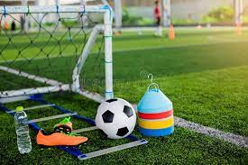

How to Choose the Right Football for Your Needs

Football is a game that requires a ball to play,without this we can as well call it a NO-BALL game.
Choosing the right football can make a big difference in your game. Here are some factors to consider
when selecting a football:
- Size
- Material
- Brand
- Intended Use
The Benefits of Using Football Training Equipment

Practice they say makes perfection, as a human you need to practice to be good at what you do If you're looking
to take your football game to the next level, investing in some trainingequipment can be a great idea.
Here are just a few of the benefits of using football training equipment:
- Improved Speed
- Improved technique
- Increased fitness
- Enhanced confidence
Trust us the deliver the best when you shop with us for your training equipment
Football Equipment and Facilities
Football facilities are locations where the sport of football is played, including a field,
goal posts, and spectator seating. Football equipment consists of a football, helmets,
shoulder pads, and protective gear worn by players to prevent injury during the game.
Below is the table showing a classification of some of the facilities and equipment.
| S/N |
EQUIPMENT |
FACILITIES |
| 1 |
Uniform/Jersey |
Pitch/Field |
|
| 2 |
Boots |
Spectator Stand |
| 3 |
Ball |
Lighting |
| 4 |
Shin Guards |
Locker Rooms |